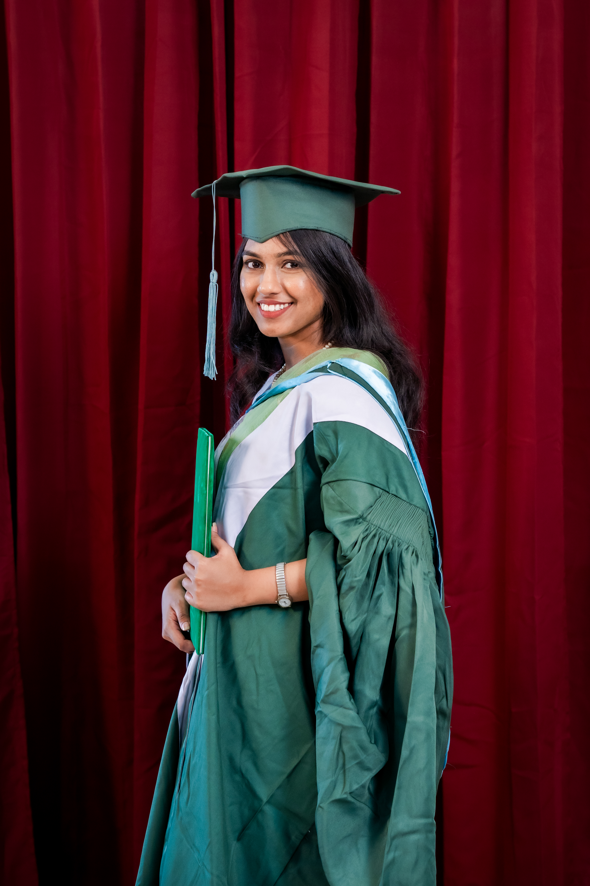
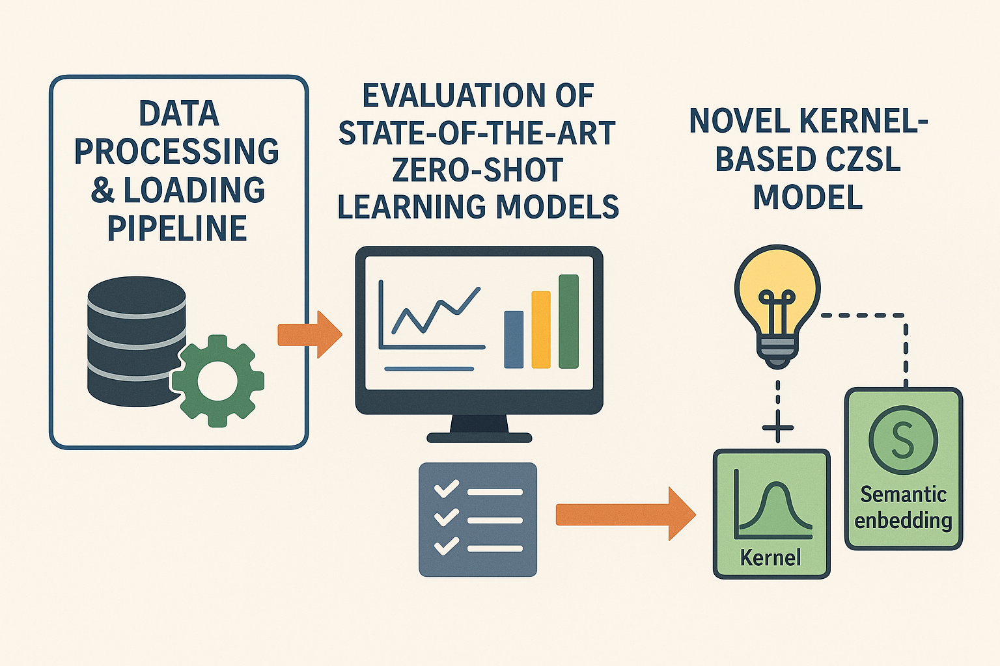
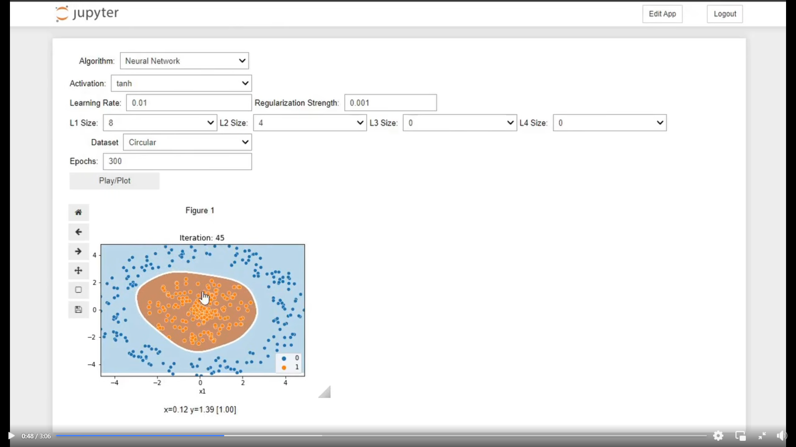
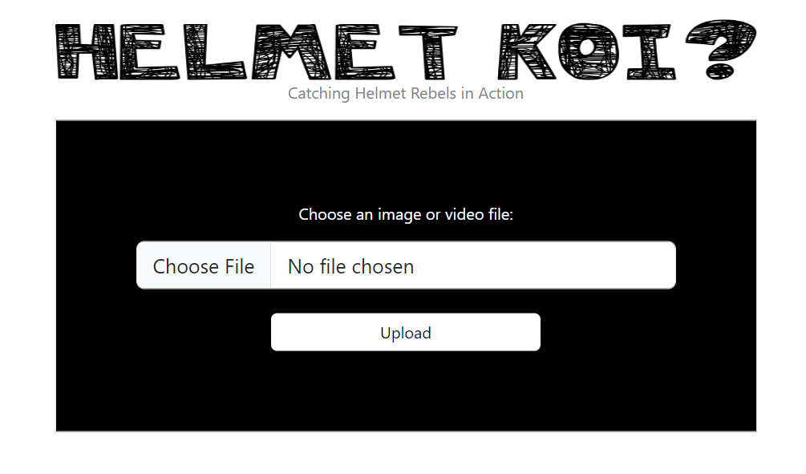
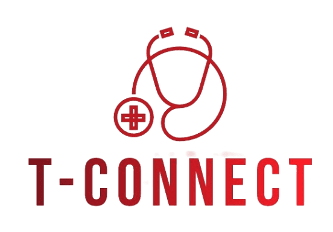
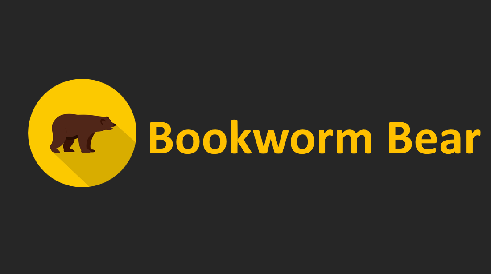

|
I am Sabah Nushra, a passionate researcher and educator with a deep interest in Computer Vision, Deep Learning, and Natural Language Processing. I completed my BSc. in Computer Science and Engineering (CSE) from Islamic University of Technology (IUT). Alongside my research, I’ve gained industry experience as a Cybersecurity Engineer at Beetles Cyber Security Ltd., where I worked on evaluating code-injection techniques and designing security mitigation strategies for Windows applications. I’m also deeply involved in community building and mentoring. As an Advisor of the IUT Programming Community, I taught students programming fundamentals and data structures, organized national-level programming contests, and hosted technical workshops and seminars. As Chief Public Relations Officer of the IEEE IUT Student Branch, I organized numerous events on machine learning, deep learning, blockchain, and research methodology, fostering collaboration among student branches and alumni across the country. Beyond research and leadership, I am a competitive programmer and datathon enthusiast. I have participated in numerous national and international programming contests and AI datathons, earning top positions such as 1st Runner-Up at Huawei Women in Tech BD 2024, Champion of “The Great Web Off” 2024, and strong rankings in the National Girls’ Programming Contest, ICPC Algo Queen, and several Bengali.AI and BUET CSE Datathons. Work email: sabahnushra [at] iut-dhaka [dot] edu |
 This photo was taken at my convocation on June 28, 2024 |
News and UpdatesJuly, 2024: March, 2024: February, 2024: December, 2023: August, 2023: July, 2023: May, 2023: April, 2023: February, 2023: December, 2022: August, 2022: December, 2021: August, 2021: April, 2021: February, 2021: |
Research Experience
My research lies at the intersection of Deep Learning, Computer Vision, and Natural Language Processing.
I am particularly interested in developing models that can learn efficiently from limited data and adapt to
evolving environments. My recent works explore continual zero-shot learning, few-shot learning for medical images segmentation,
transformer-based models for Bengali text style transfer, and zero-shot learning for generalized recognition.
Broadly, I aim to design intelligent systems that are robust, adaptable, and capable of understanding and
reasoning across modalities, with potential applications in Software Engineering, Security, and Human-AI Interaction.
|
Ongoing

|
Enhancing Few-Shot Medical Image Segmentation with Refined PrototypesRole: Project Lead Proposed an iterative refinement framework that enhances support and query feature interaction for more accurate segmentation in few-shot medical imaging. Integrated self-attention and cross-masked attention modules to generate contextually enriched feature maps and robust prototype representations. Introduced regional prototype generation to handle intra-class variations and improve adaptability across diverse medical datasets (ABD-CT, ABD-MR, CMR). Achieved superior performance in mean Dice coefficient (DSC), demonstrating improved generalization and segmentation precision over existing methods. Supervisor:Dr. Hasanul Kabir |

|
Bengali Text Style Transfer using Fine-Tuned Transformer ModelsRole: Project Lead Constructed the first large-scale Bangla Style Transfer dataset containing 8,000 positive–negative and 4,000 formal–informal text pairs. Fine-tuned the Bangla T5 model for bilingual style adaptation, achieving substantial performance gains across both style transfer tasks. Model Achieved BLEU scores of 90.78 (formal→informal) and 88.13 (positive→negative), significantly outperforming baseline models. Supervisor:Sabbir Ahmed |
|
 |
Continual Zero-Shot Learning (CZSL)Role: Collaborator Designed and implemented an efficient data processing and loading pipeline tailored for continual zero-shot learning tasks, enabling smooth integration of new classes and datasets without retraining from scratch. Conducted comprehensive evaluations of several state-of-the-art zero-shot learning models within a continual learning framework to analyze their adaptability, performance retention, and resistance to catastrophic forgetting. Developed and tested a novel kernel-based CZSL model that leveraged semantic embeddings and kernel functions to enhance generalization across unseen classes and incremental learning scenarios. |
Projects |
|
 |
ML Algorithm VisualizerTools: Jupyter, ScikitLearn, 2023 code/ Developed an interactive visualization tool that demonstrates the workings of key machine learning algorithms, including regression, classification, clustering, and dimensionality reduction, to help users intuitively understand fundamental ML concepts. |
|
 |
Helmet Detection using YOLOTools: Python, OpenCV, 2023 code/ Developed an automated helmet detection system using YOLOv5, YOLOv6, and YOLOv8 trained on a custom dataset. Achieved efficient real-time detection performance to promote road safety and helmet compliance. |

|
Neural Style TransferTools: Tensorflow, 2023 code/ Implemented Neural Style Transfer (NST) using TensorFlow and a pretrained VGG-19 model to blend content and style images, producing artistic outputs after iterative feature optimization over 2000 iterations. |

|
IUTCSTools: Django, HTML, EJS, MySQL, 2023 code/ Built a club website featuring a blog, event pages, and registration functionalities for intra- and inter-university events. Implemented the frontend with HTML and CSS and managed data storage using MySQL. |

|
AasthaTools: React, Node.js, HTML, MySQL, 2022 code/ Developed a web application that connects people in medical emergencies with nearby blood donors, featuring a searchable database built with MySQL and a user-friendly frontend using HTML, CSS, and EJS. |
DormEaseTools: Dart, Firebase, 2022 code/ A comprehensive hostel management mobile app that allows students to book rooms, submit complaints, view notices, update personal information, check vacant rooms, and see the food menu. |
|
|
 |
TConnectTools: React, Node.js, MongoDB, 2021 code/ A prescription management website. Enabled doctors to view patients’ medical documents upon receiving permission from the patients. |
|
 |
BookwormBearTools: C++, SFM, 2020 code/ An interactive Word game with Visual Effects and Music. Implemented using C++ with the help of SFML Library. There is a maze in the game. And some letters have been given. Players have to guess the word correctly. If the player can’t guess the word in that case he can take a hint. |
Education
|
Work Experience
|
Honors and Awards
- Champion, IUTCS presents ”The Great Web Off”, 2024 - 29th, HerWILL: AI for Equality Datathon, 2024 - 4th, Blockchain Olympiad Bangladesh, 2023 - 32nd, DL Sprint 2.0- BUET CSE Fest, 2023 - 30th, ASR for Regional Dialects Datathon, Bengali.AI, 2023 - Top60, ICPC Algo Queen (Global Rank), 2023 - 9th, CodeRush 1.0 Intra-IUT Programming Contest, 2023 - 26th, National Girls’ Programming Contest, 2023 - 6th, IUT Intra-University Programming Contest, 2022 - 17th, Ada Lovelace National Girls’ Programming Contest, 2022 - 18th, Ada Lovelace National Girls’ Programming Contest, 2021 - 32nd, National Girls’ Programming Contest, 2021 - Top 50, Banglalink Ennovators 3.0, 2021 - Top 10, GP Explorers 2.0, 2021 |
Leadership
|
|
Last updated: October 26, 2025 |